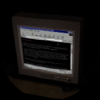

Lost Discs
The ones the main searchers don't know about.
Other Pages
Warning: These might contain sensitive material.

Other Website
Their one.
(This is a fanmade website and is not associated with Petscop)
Credits